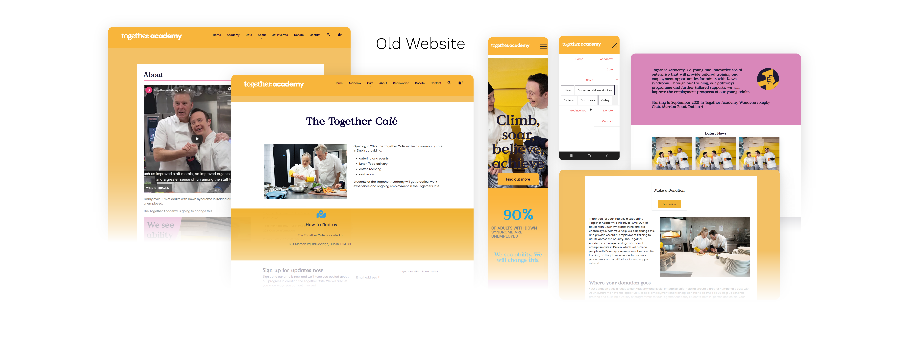
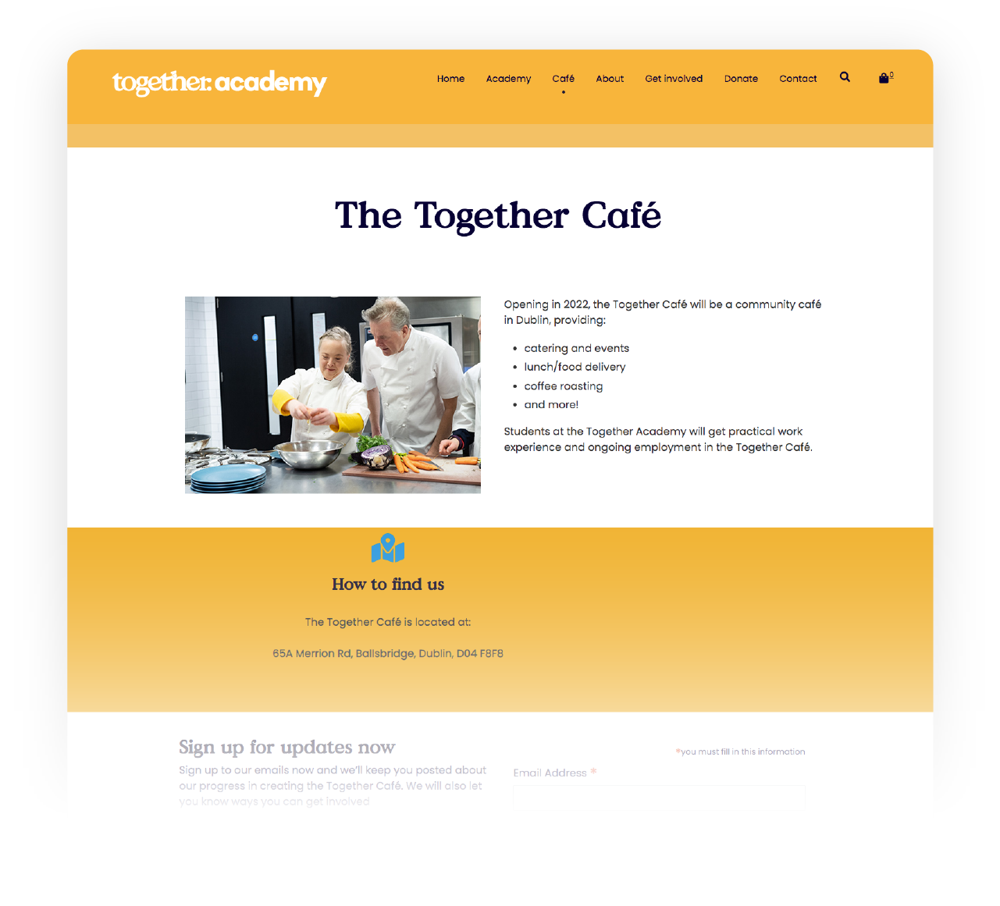
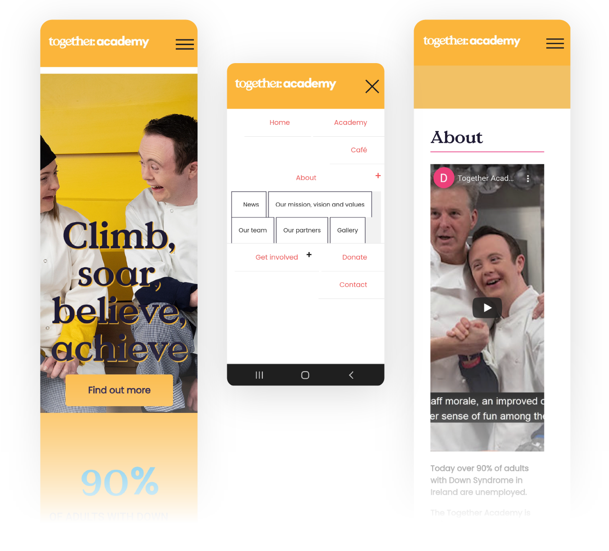
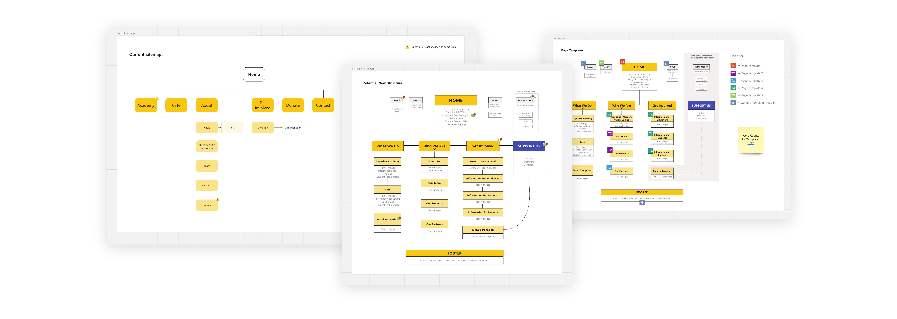
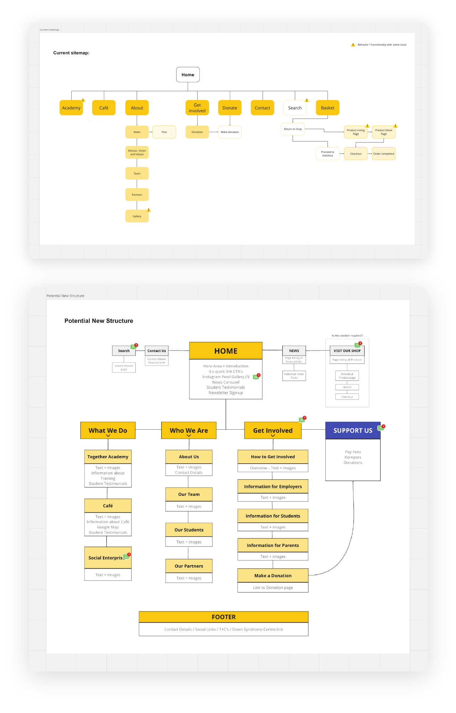
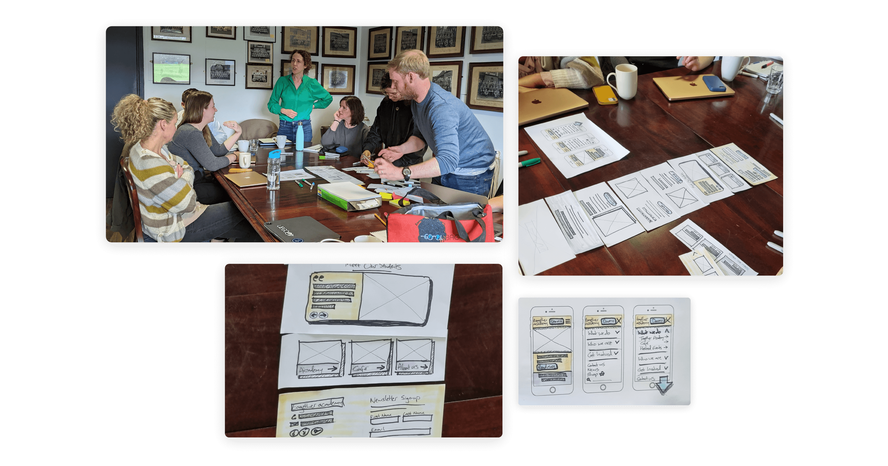
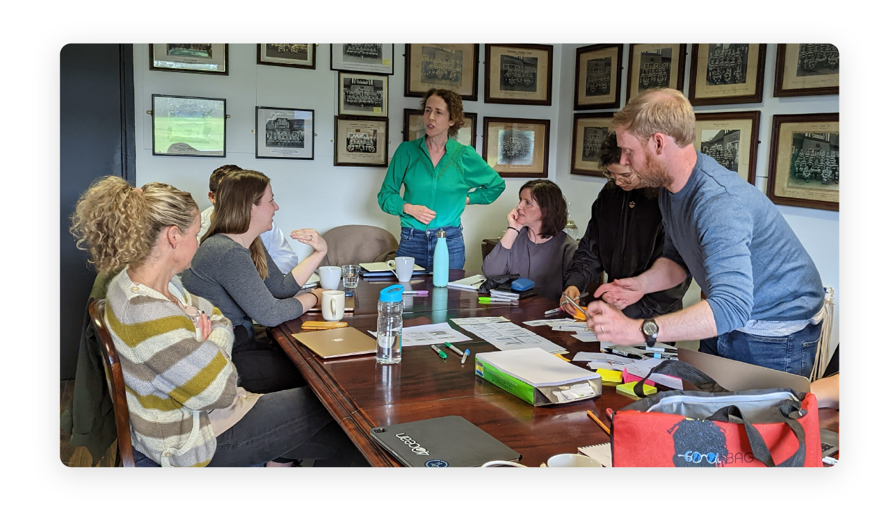
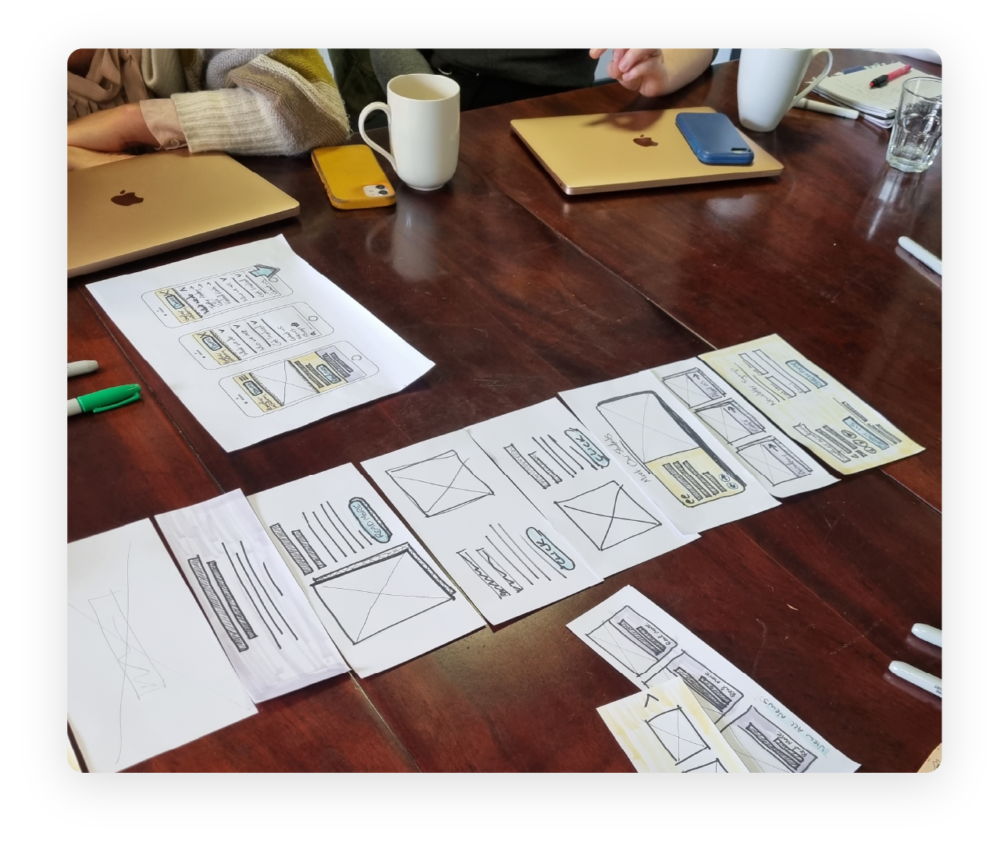
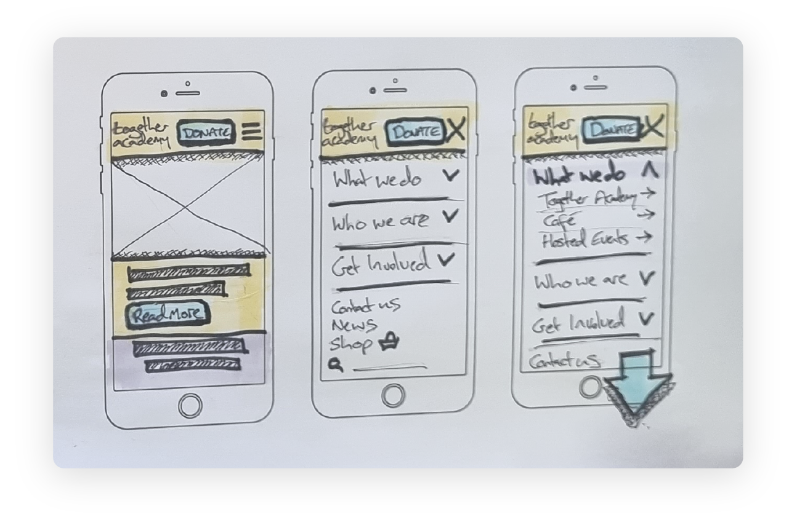
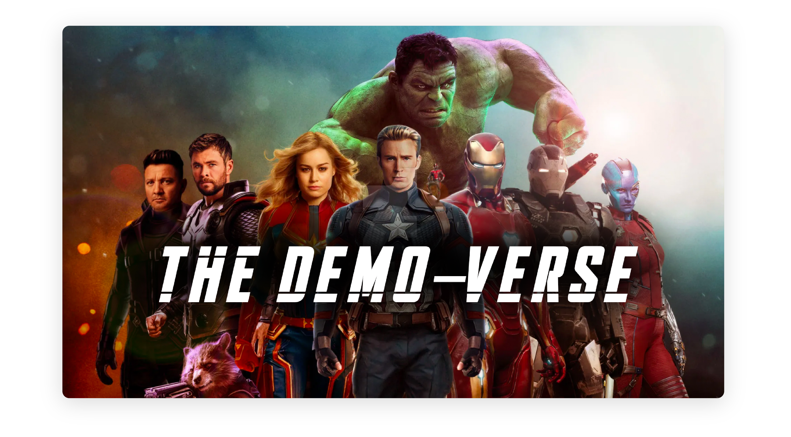

UX DESIGN CASE STUDY
Together Academy
Overview
At Global Payments we have 2 days leave annually to volunteer for any cause where we feel we could make a positive impact. So a small group of us from the Irish-based UX team decided we would join forces with the Together Academy in Dublin to help reimagine their website experience.
The Together Academy is a social enterprise providing tailored training and employment opportunities for young adults with Down syndrome. They also opened the Together Café in Dublin 4 in September 2022.
We started this project very soon after I joined Global Payments and was still finding my feet, so it was an excellent opportunity to get to know my new colleagues better and to showcase what talents I could bring.
THE CHALLENGE
Two days to design a website
The main challenge for this project was that we only had 2 days each to use, so we needed to be very organised and efficient with our time. But with the upcoming launch of the Together Academy Café, there was a clear need for an improved online presence that the Academy could be proud to direct people to and that could help them to tell their story.
They had an existing website that had been set up for them by a third party which was very basic and really only ever intended to be a placeholder, but the Academy had never got around to working on it.
From the outset we identified a number of key jobs that needed to be done:
Integrate their primary online presence – Instagram – into the new website.
Consider the many different user personas while designing the site and content.
Assist with content advice.
Assist with building new custom areas of the website, such as a place for the Together Academy to thank their many supporters and sponsors.
Make the website mobile friendly / responsive.
Improve the navigation flow by helping the audience find key information in an intuitive and timely manner.
Here are some screenshots from the old Together Academy website:



UNDERSTANDING
Needs, pain points and goals
Our process, as always, began with research.
Our UX Researcher Shauna, with assistance from me, carried out several interviews with key stakeholders to understand the Together Academy’s needs, pain points, and goals for the future of the website. Alongside this, I conducted a review of the existing website structure and sitemap with my colleague Priscila, as well as a peer review to understand what other similar websites were doing well.
The interviews and peer review helped us identify several content gaps and website issues, based on which we were then able to make recommendations.
Here are some examples of the type of insights we found and our recommendations:
Insight 01
The Together Academy is different from existing training programs or government services
Recommendations:
- − Communicate what Together Academy does differently.
- − Showcase with photography how the Together Academy is superior to existing services.
- − Make clear that the Together Academy programmes focus on practical and visual learning - a better suited learning style for those with Down syndrome.
Insight 02
The Together Academy wants to break the stereotype that people with Down Syndrome are incapable of ordinary things such as employment
Recommendations:
- − Showcase the young adults' stories (testimonials / impact stories).
- − Communicate that the Together Academy is there to help both the young adults and parents realise their capabilities that already exist.
Insight 03
The Together Academy wants to increase the visibility of individuals with Down Syndrome in society but this is impossible without support
Recommendations:
- − Provide examples showing the impact that partnerships and employers can have.
IN PERSON WORKSHOP
Pens, paper, tea and scones...
Armed with insights from the research, next came the fun part! We arranged an in-person workshop onsite at the Together Academy to validate our ideas and discuss our recommendations.
We also presented a proposed, restructured sitemap for the content architecture. We felt that there were three core categories of information that the website needed to communicate – what Together Academy does, who they are and how to get involved. We also suggested using the Get Involved section to address specific audiences, ie. a page with information for employers, a page with information for students, and a page with information for the parents of prospective students.
Together Academy were also keen to not be seen as a charity – they are a social enterprise. This was an important distinction for them as, while they are happy to receive assistance from supporters, they do not see themselves as entirely dependent on it. And so a decision was made to have a call-to-action button labelled "Support Us", rather than "Donate", which would link to an area of the shop and allow people to make a contributory donation if they wished.


It was great to finally meet the guys running the Together Academy face-to-face, but we also got to meet the students and see what they do day-to-day. We were hugely impressed – no more so than by the delicious fresh scones that were served to us in the Café, freshly baked by the students themselves!
Refreshed from the break, a sketching session followed next. Sketching is a key part of our design process, and the output consisted of a set of wireframes that were co-created with the Together Academy team.




DESIGN & DEVELOPMENT
Insights into action
We invested a large part of our allotted time into the early phases of the process, but the benefit of this was that we were now armed with really rich insights, feedback and stakeholder consensus, which would make the next stage of the process much easier to get through. But we still had to work fast!
After the workshop, Priscila (UX Designer) and I moved into the design phase – planning, allocating jobs and building out a prototype of the website based on the wireframes from the in-person workshop. The prototype allowed the Together Academy to get a visual sense of how the website would look and feel when complete and, once they had reviewed, they were over the moon! They mentioned to us that they felt the new website would empower them to promote their work and engage with prospective students and employers in a way that they weren’t able to do previously.
The development phase came next with Rom (UI Developer) responsible for developing the website using WordPress. Meanwhile, Eoin (VP Software Engineering) integrated the WooCommerce plugin on the website which gave the Together Academy the ability to sell merchandise and Christmas hampers through a Global Payments e-commerce solution.
WEBSITE LAUNCH
Climb, soar, believe, achieve...
The new site officially launched on 28th of October 2022. This was such an enjoyable volunteering project. Because what the people in Together Academy are trying to achieve is to build more empathy within our society. They understand their students and their goals, as well as their pain points, and they want to facilitate these students in achieving those goals.
And in essence, that is what we try to do as UX designers. What I work on day-to-day is not as profoundly life-changing as what the guys in Together Academy do, and so it was an absolute pleasure for them to allow us to work with them, even just for a very short time, and experience first hand the impact of what they do.


I trusted the UX Research first, and wanted to design something that didn't just do "a job", but would provide a helping hand in a realistic and practical way, and was human by design.
And as we dug more into all the problems that needed to be solved and the project became more complex, I feel we still designed for simplicity.
I also had to question existence at times, and question the original ask and requirements – because ultimately we cared and we wanted to do what was right.
THE FUTURE
This is only the beginning

Just to wrap up, this is only really the beginning. Because of the process and the collaboration with stakeholders from the outset, we already have a vision for how to grow the demo site. New value adds, new payment methods, new reporting actions – constantly evolving the demo whilst always working (from a user experience perspective) to maintain the integrity and success of the demo we’ve created.
I am already beginning work on other demo sites. And these demos should really be linked and work in conjunction with the Unified Payments Demo, as should any other demo we create in future to showcase capabilities available through the API.
So I see a future state where we potentially have a master demo environment, and within it are lots of different product demos, and these would all be intertwined and linked and working together.
A month or two before the launch of our MVP for the Unified Payments demo, I was discussing this idea with one of my colleagues and he came up with a great title for this idea, which was...

So here's to the Demo-verse! The future is very exciting.